Подключение и программирование Ардуино для начинающих
Какую первую плату Arduino купить новичку?
Следующая по популярности (после Arduino UNO) плата, стоит почти в двое дешевле предыдущей – 2-3 доллара. Это плата Arduino Nano. Актуальные платы построены том же Atmega328, функционально они аналогичны с UNO, различия в размерах и решении согласования с USB, об этом позже подробнее. Еще одним отличием является то, что для подключения к плате устройств предусмотрены штекера, в виде иголок.
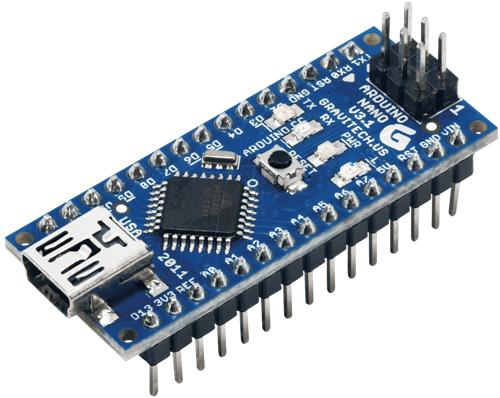
Количество пинов (ножек) этой платы совпадает, но вы можете наблюдать что микроконтроллер выполнен в более компактном корпусе TQFP32, в корпусе добавлены ADC6 и ADC7, другие две «лишних» ножки дублируют шину питания. Её размеры довольно компактные – примерно, как большой палец вашей руки.
Третья по популярности плата – это Arduino Pro Mini, на ней нет USB порта для подключения к компьютеру, как осуществляется связь я расскажу немного позже.
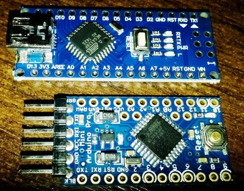
Сравнение размеров Arduino Nano и Pro Mini
Это самая маленькая плата из всех рассмотренных, в остальном она аналогична предыдущим двум, а её сердцем является по-прежнему Atmega328. Другие платы рассматривать не будем, так как это статья для начинающих, да и сравнение плат – это тема отдельной статьи.
Arduino Pro Mini pinout, в верхней части схема подключения USB-UART, пин «GRN» - разведен на цепь сброса микроконтроллера, может называться по иному, для чего это нужно вы узнаете далее.
Итоги:
Если UNO удобна для макетирования, то Nano и Pro Mini удобны для финальных версий вашего проекта, потому что занимают мало места.
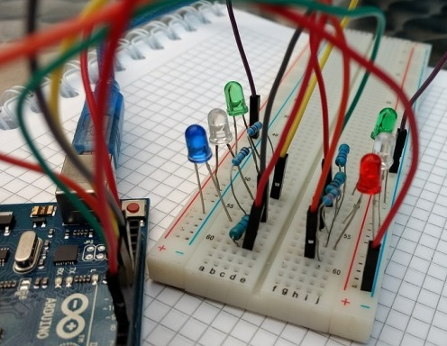
Как подключить Arduino к компьютеру?
Arduino Uno и Nano подключаются к компьютеру по USB. При этом нет аппаратной поддержки USB порта, здесь применено схемное решение преобразования уровней, обычно называемое USB-to-Serial или USB-UART (rs-232). При этом в микроконтроллер прошит специальный Arduino загрузчик, который позволяет прошиваться по этим шинам.
В Arduino Uno реализована эта вязь на микроконтроллере с поддержкой USB – ATmega16U2 (AT16U2). Получается такая ситуация, что дополнительный микроконтроллер на плате нужен для прошивки основного микроконтроллера.
В Arduino Nano это реализовано микросхемой FT232R, или её аналогом CH340. Это не микроконтроллер — это преобразователь уровней, этот факт облегчает сборку Arduino Nano с нуля своими руками.
Обычно драйвера устанавливаются автоматически при подключении платы Arduino. Однако, когда я купил китайскую копию Arduino Nano, устройство было опознано, но оно не работало, на преобразователе была наклеена круглая наклейка с данными о дате выпуска, не знаю нарочно ли это было сделано, но отклеив её я увидел маркировку CH340.
До этого я не сталкивался с таким и думал, что все USB-UART преобразователи собраны на FT232, пришлось скачать драйвера, их очень легко найти по запросу «Arduino ch340 драйвера». После простой установки – всё заработало!
Через этот же USB порт может и питаться микроконтроллер, т.е. если вы подключите его к адаптеру от мобильного телефона – ваша система будет работать.
Что делать если на моей плате нет USB?
Плата Arduino Pro Mini имеет меньшие габариты. Это достигли тем что убрали USB разъём для прошивки и тот самый USB-UART преобразователь. Поэтому его нужно докупить отдельно. Простейший преобразователь на CH340 (самый дешевый), CPL2102 и FT232R, продаётся стоит от 1 доллара.
При покупке обратите внимание на какое напряжение рассчитан этот переходник. Pro mini бывает в версиях 3.3 и 5 В, на преобразователях часто расположен джампер для переключения напряжения питания.
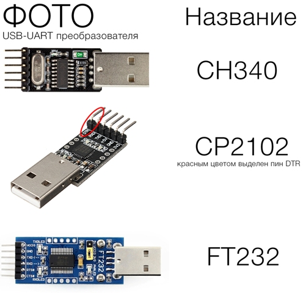
При прошивке Pro Mini, непосредственно перед её началом необходимо нажимать на RESET, однако в преобразователях с DTR это делать не нужно, схема подключения на рисунке ниже.
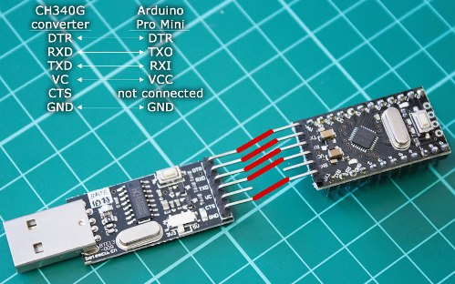
Стыкуются они специальными клеммами «Мама-Мама» (female-female).
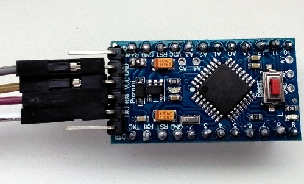
Собственно, все соединения можно сделать с помощью таких клемм (Dupont), они бывают как с двух сторон с гнездами, так и со штекерами, так и с одной стороны гнездо, а с другой штекер.
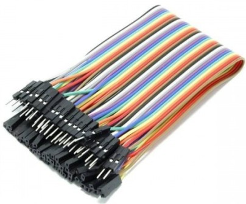
Как писать программы для Arduino?
Для работы со скетчами (название прошивки на языке ардуинщиков), есть специальная интегрированная среда для разработки Arduino IDE, скачать бесплатно её можно с официального сайта или с любого тематического ресурса, с установкой проблем обычно не возникает.
Так выглядит интерфейс программы. Писать программы можно на специально разработанном для ардуино упрощенном языке C AVR, по сути это набор библиотек, который называют Wiring, а также на чистом C AVR. Использование которого облегчает код и ускоряет его работу.
В верхней части окна присутствует привычное меню, где можно открыть файл, настройки, выбрать плату, с которой вы работаете (Uno, Nano и много-много других) а также открыть проекты с готовыми примерами кода. Ниже расположен набор кнопок для работы с прошивкой, назначение клавиш вы увидите на рисунке ниже.
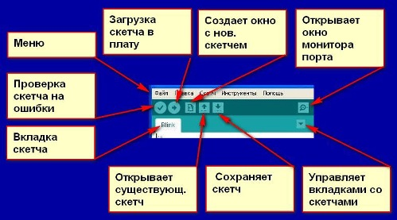
В нижней части окна – область для вывода информации о проекте, о состоянии кода, прошивки и наличии ошибок.
Основы программирования в Arduino IDE
В начале кода нужно объявить переменные и подключить дополнительные библиотеки, если они имеются, делается это следующим образом:
#define peremennaya 1234; // Объявляем переменную со значением 1234
Команда Define дают компилятору самому выбрать тип переменной, но вы можете его задать вручную, например, целочисленный int, или с плавающей точкой float.
Программа может определять состояние пина, как 1 или 0. 1 –это логическая единица, если пин 13 равен 1, то напряжение на его физической ножке будет равняться напряжению питания микроконтроллера (для ардуино UNO и Nano – 5 В)
Запись цифрового сигнала осуществляется командой digitalWrite (пин, значение), например:
Как вы могли понять обращение к портам идёт по нумерации на плате, соответствующей цифрой. Вот пример аналогичного предыдущему коду:
Часто востребованная функция задержки времени вызывается командой delay(), значение которой задаётся в миллисекундах, микросекунды достигаются с помощью
Настройки портов на вход и выход задаются в функции void setup{}, командой:
pinMode(NOMERPORTA, OUTPUT/INPUT); // аргументы – название переменной или номер порта, вход или выход на выбор
}
Void loop{}
Понимаем первую программу «Blink»
В качестве своеобразного «Hello, world» для микроконтроллеров является программа мигания светодиодом, давайте разберем её код:
В начале командой pinMode мы сказали микроконтроллеру назначить порт со светодиодом на выход. Вы уже заметили, что в коде нет объявления переменной “LED_BUILTIN”, дело в том, что в платах Uno, Nano и других с завода к 13 выводу подключен встроенный светодиод и он распаян на плате. Он может быть использован вами для индикации в ваших проектах или для простейшей проверки ваших программ-мигалок.
Далее мы установили вывод к которому подпаян светодиод в единицу (5 В), следующая строка заставляет МК подождать 1 секунду, а затем устанавливает пин LED_BUILTIN в значение нуля, ждет секунду и программа повторяется по кругу, таким образом, когда LED_BUILTIN равен 1 – светодиод(да и любая другая нагрузка подключенная к порту) включен, когда в 0 – выключен.
Читаем значение с аналогового порта и используем прочитанные данные
Микроконтроллер AVR Atmega328 имеет встроенный 10 битный аналогово цифровой преобразователь. 10 битный АЦП позволяет считывать значение напряжение от 0 до 5 вольт, с шагом в 1/1024 от всего размаха амплитуды сигнала (5 В).
Чтобы было понятнее рассмотрим ситуацию, допустим значение напряжения на аналоговом входе 2.5 В, значит микроконтроллер прочитает значение с пина «512», если напряжение равно 0 – «0», а если 5 В – (1023). 1023 – потому что счёт идёт с 0, т.е. 0, 1, 2, 3 и т.д. до 1023 – всего 1024 значения.
Вот как это выглядит в коде, на примере стандартного скетча «analogInput»
int ledPin = 13;
int sensorValue = 0;
void setup() {
pinMode(ledPin, OUTPUT);
}
void loop() {
sensorValue = analogRead(sensorPin);
digitalWrite(ledPin, HIGH);
delay(sensorValue);
digitalWrite(ledPin, LOW);
}
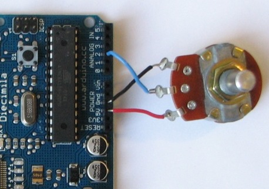
Схема подключения потенциометра к Arduino, по аналогии центральный вывод вы можете подключить к любому аналоговому входу
Объявляем переменные:
- Ledpin – самостоятельно назначаем пин со встроенным светодиодом на выход и даём индивидуальное имя;
- sensorPin – аналоговый вход, задаётся соответственно маркировке на плате: A0, A1, A2 и т.д.;
- sensorValue – переменная для хранения целочисленного прочитанного значения и дальнейшей работы с ним.
Код работает так: sensorValue сохраняем прочитанное с sensorPin аналоговое значение (команда analogRead). – здесь работа с аналоговым сигналом заканчивается, дальше всё как в предыдущем примере.
Записываем единицу в ledPin, светодиод включается и ждем время равное значению sensorValue, т.е. от 0 до 1023 миллисекунд. Выключаем светодиод и снова ждем этот период времени, после чего код повторяется.
Таким образом положением потенциометра мы задаем частоту миганий светодиода.
Функция map для Арудино
Не все функции для исполнительных механизмов (мне ни одной не известно) в качестве аргумента поддерживают «1023», например, сервопривод ограничен углом поворота, т.е на пол оборотоа (180 градуов) (пол оборота) сервомоторчика максимальный аргумент функции равен «180»
Теперь о синтаксисе: map (значение которое мы переводим, минимальная величина входного, максимальная величина входного, минимальная выходного, максимальная выходного значения).
В коде это выглядит так:
Мы считываем значение с потенциометра (analogRead(pot)) от 0 до 1023, а на выходе получаем числа от 0 до 180
Значения карты величин:
- 0=0;
- 1023=180;
На практике применим это к работе коду того же сервопривода, взгляните на код с Arduino IDE, если вы внимательно читали предыдущие разделы, то он пояснений не требует.
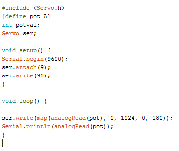
И схема подключения.
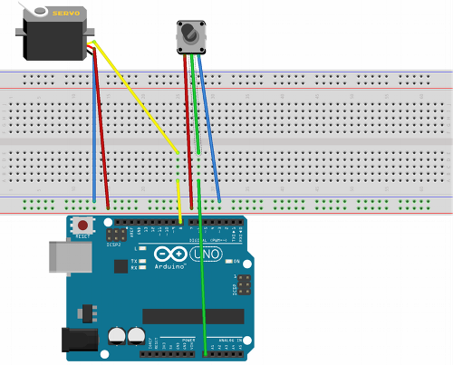
Выводы Ардуино – очень удобное средство для обучения работы с микроконтроллерами. А если использовать чистый C AVR, или как его иногда называют «Pure C» - вы значительно уменьшите вес кода, и его больше поместиться в память микроконтроллера, в результате вы получите отличную отладочную плату заводского исполнения с возможностью прошивки по USB.
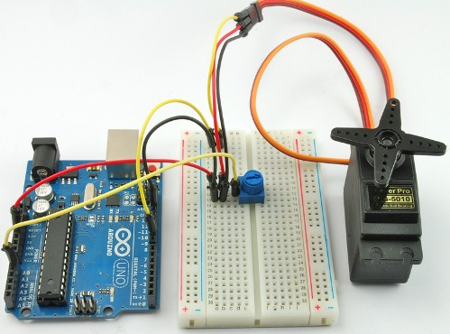
Источники
electrik.info - Подключение и программирование Ардуино для начинающих